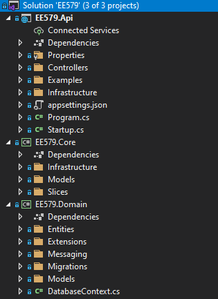
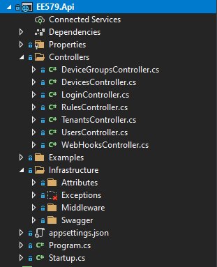
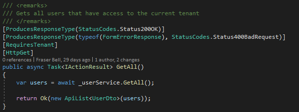
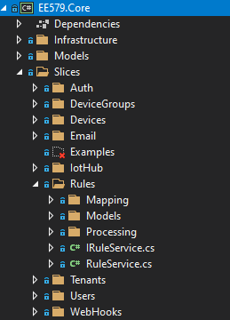
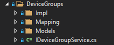
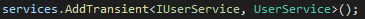
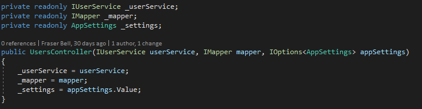
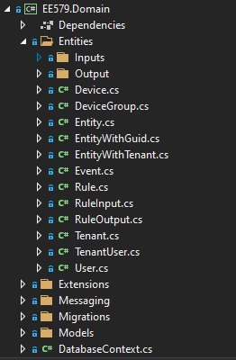

API#
Framework and Language#
The API was built using the framework ASP.NET Core, built on top of Microsoft’s increasingly trending language, C#. ASP.NET Core is an web API specific framework that extends .NET Core. We are using .NET 5.
As we have followed industry level design and architectural patterns for ASP.NET Core web APIs, anyone with any ASP.NET Core experience should be able to pick up our API without knowing detailed knowledge of the component level logic. To learn more about ASP.NET Core, see here.
Running the API#
- First install Visual Studio from here
- Pull our API with
git clone https://github.com/fraserb99/ee579-api.git - Navigate into the
EE579directory - Open
EE579.slnwith Visual Studio. Visual Studio should automatically install all the necessary dependencies - Press the green play button on the top toolbar to run the API. This starts the API on localhost:5001
Understanding the API's Architecture and Directory Structure#
The API is organised into three modules: Api, Core and Domain. The root directory structure for each module is shown below:

- The
APImodule contains functionality related to basic input/output in the API as well as launch configurations and application settings. - The
Coremodule contains all the API logic for handling requests. - The
Domainmodule contains all the mapped database entity objects. An object representation of the database is also stored at the root level inDatabaseContext.cs.
API Module#

Above, is the API Module with some of its main directories expanded. Within the Controllers directory, lies all the controllers for the API. A controller is a class that contains methods for the entry points for all our different endpoints. Controllers are split into their category. For example, all endpoints to do with users, such as getting a list of all users in the tennant, lie within the UsersController class. This get all endpoint within the UsersController can be seen below:

We can see that there are various "attributes" above the method definition. Attributes can be used for various attribution related configuration to do with a particular method. In this case, there is the [HttpGet] attribute that defines this method as a GET request. You can find out more about attributes here. Within the methody body, a call to the method GetAll() is invoked upon the user service. This returns a list of user objects. More about services and dependency injection will be covered later. On the last line of this controller method, the list of users is returned to the front end. ASP.NET Core automatically serialises the list of user objects to JSON behind the scenes.
Moving back up one directory from the Controllers directory, is the Infrastructure directory. Within this directory contains definitions for custom attributes, exceptions, middleware that handles status codes, and as well as the swagger documentation configurations. In the route directory of the API module, lies two important classes: Program and Startup. Program launches the API and boostraps the Startup class. Within Startup contains many API configurations, service registering and authorization handling. Things such as CORS policies and bearer token authentication go in here.
Core Module#

Above, is the Core Module with some of its main directories expanded. At the highest directory level, is Infrastructure, Models and Slices. Similar to the Infrastructure directory in the API module, this directory contains classes that provide functionality to the system as a whole. Such as general utlity method overrides and extensions etc.
Models, is a directory for data objects. The classes typically should only contain properties and not give any functionality around them. A Models directory, can be seen in multiple different places and levels within the API. This is for organisational purposes, for example, all models associated with users will be within a Models directory within the Slices/Users directory.
Within the Slices directory, contains the bulk of the API logic. In the context of the API, a slice, is a grouped section (or slice) of the API, where the grouping is organised by entity relation, such as users, rules, devices etc. That is, all logic handling with regards to that entity, is contained in its own slice.

We can see above the DeviceGroups slice directory expanded. This shows a typical architecture for a slice. Within contains:
- A
Mappingdirectory containing mapping profiles that define behaviour for mapping one object to another (with regards to this slice). - Another
Modelsdirectory containg all data objects associated with this slice. - An
Impldirectory (short for implementation) that contains the service class for this slice that implements the respective service interface. - The respective service interface with regards to this slice.
Services#
So what actually is a service? A service is a logic component used by the API. It is good practice to create a service for every slice in the API. In simple terms, the service will provide functionality and methods for interacting and manipulating the respective entity in that slice. So for example, the user service will have methods for getting a user from the database, creating a new user in the database, updating a user and so forth. The key thing that differentiates a service from a conventional class, is that services get registered in the aforementioned Startup class and can thereby be dependency injected into other classes such as controllers or even injected into other services.
Dependency Injecting Services#
Dependency injection is when an object receives additional objects it depends on. For example, the UsersController needs access to the UsersService so that when a request to get a user is received, it can call this method on the user service which will return the user. For this to be possible, two steps are required:
- Register the class as a service in Startup.cs - This is done like so within the
ConfigureServicesmethod inStartup.cs:  This tells the API that the interfaceIUserServiceis parent to theUserServiceimplementation. AddTransient means that upon every request to the API, ASP.NET Core will inject an instance ofUserServicewith typeIUserServiceinto all objects that depend on it. AddTransient is so called named due to the transient lifecycle of the injected object. That is, after the request has finished execution, .NET will perform clean up and garbage collection to free up memory. It is injected with typeIUserServicerather than theUserServicetype itself because programming to the interface gives greater code decoupling and abstraction providing a well architectured and maintainable design. - Receive the injection within an object - Receiving a dependency happens within the constructor of the class. This is shown below:

You can see above, that the constructor for the UsersController takes an IUserService as one of its parameters. What gets passed in for this type, is then set as an instance variable. This is the user service dependency. But then where does the IUserService get passed in from? Because of the AddTransient method call made in Startup.cs in step 1, ASP.NET Core knows to look for all contructors that take the type IUserService as a parameter and will pass in an instance of UserService whenever a request to the API is made. This is seamless to the programmer, one of the benefits of such a design pattern. The dependency can then be interacted with using the instance variable, in this case the _userService reference.
Domain Module#

Above is the directory structure of the domain module with the Entities directory expanded. The Entities directory contains object representations of database entities. These entity classes are mapped from the database and vice versa. This is achieved by the use of Entity Framework Core or EF Core for short.
EF Core#
Entity Framework Core is an object relational mapper. This means that it can map database tables to lists of objects where an object is an entry in the table. For example, a users table with 3 columns: id, username and password would get mapped to a list of User objects. Where a User object would have propeties of id: int, username: string and password: string. By interacting with these objects within the API in a conventional object orientated fashion, EF Core will update the database seamlessly behind the scenes. For example, to update the password of a user with id 1, you would search through the list of User objects until you find a User with its id property value equal to 1 and then updating the password on this selected object. EF Core will then update the database to reflect this change. For creating a User it is as simple as adding a new User object to the list of users.
Migrations#
But then how does the database schema stay in sync with the object representation in the API? Keeping the two domains in sync is inherently simple using the Code First design approach with EF Core Migrations. Code First means that the database schema is reflective of the API domain entities rather than the API domain entities updating to match the database schema. For example, to add a new column/propert to the User domain object (and thus the database) the following steps are required:
- Open the
Userdomain object in Entities/User. - Add a new field to the class. E.g
email: string. - In the terminal in Visual Studio, run the command
Add-Migration AddedAnEmailColumn. ..* This will generate some simple code that will add anemailcolumn to the database. It is worth quickly reviewing this to make sure it is what you want to do. - Run
Update-Databasethis will execute the migration code and add the column to the database.
When the API starts up, it will automatically check to make sure it has applied all the latest migrations. This ensures that the database always matches the object representation in the code.